The week 4 lab uses the Duty-Cycle MAC Bench, a browser simulator of B-MAC, X-MAC, ContikiMAC, RI-MAC and A-MAC. Five experiments (A–E from the worksheet) look at hidden terminals, preamble versus strobe rendezvous, the wake interval trade-off, ContikiMAC’s phase lock and a comparison of all five protocols. For each one: predict, run, read the counters, timeline and event log, and explain the mechanism.
Setup
Item
Value
Tool
Duty-Cycle MAC Bench (HTML, from the course Teams), Chrome on Windows
Default parameters
Wake/check interval 100 ms, radio range 21 m, mean packet interval 1200 ms, retry limit 3
Comparisons
Compare all five: every MAC runs headless for 60 s of simulated time with the same random seed
Experiment A — hidden terminal
Preset Hidden terminal, ContikiMAC, synchronised traffic on, Burst: all senders three times. R1 hears both senders; S1 and S2 cannot hear each other.
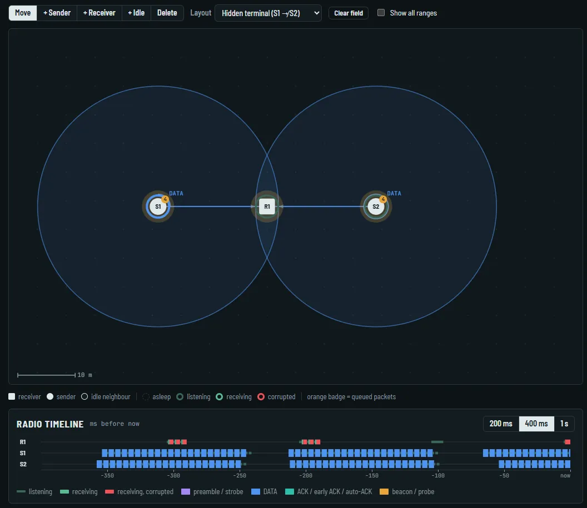
Paused on a hidden-terminal event: both DATA frames overlap at R1 (red on R1’s timeline row).
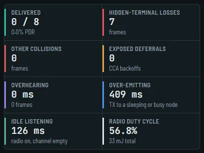
Every DATA copy collides at R1; nothing is delivered in this window.
Run (recording)
Delivered / generated
PDR
Hidden-terminal losses
After 3 bursts, range 21 m
45 / 82
≈ 55 %
350 → 378 frames
Range 32 m (maximum), 2 bursts
—
—
26 frames
S2 moved next to R1, 3 bursts
12 / 12
100 %
0
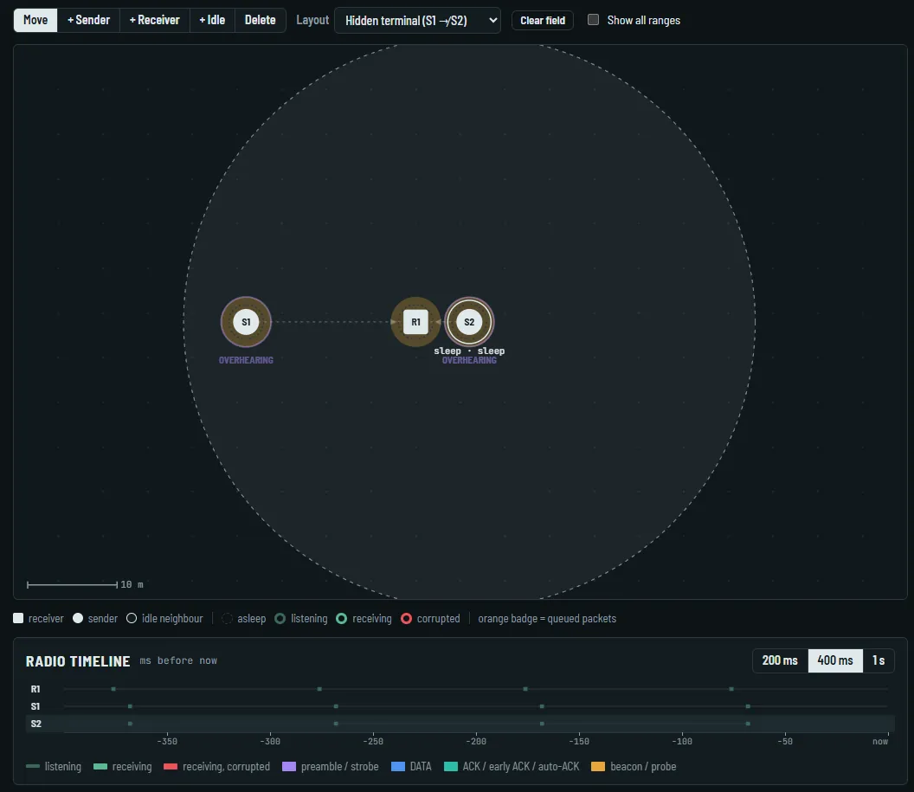
With S1 and S2 in each other’s range the log shows “deferred: channel busy” instead of hidden-terminal losses.
Q1. Carrier sensing is local. S1 checks the channel at its own position; S2 is out of its range, so S1 hears nothing and transmits. S2 decides the same.
Q2. The collision happens at the common receiver R1, which is inside both ranges and receives both frames at once. With no capture effect both are corrupted; the senders only notice the missing ACK and retry.
Q3. 32 m is not enough: S1 and S2 are still more than 32 m apart and the losses continue. Moving S2 closer until they hear each other brings the losses to 0 and PDR to 100 %; S1’s carrier sense now hears S2 and waits.
Experiment B — B-MAC versus X-MAC
Preset Overhearing crowd (S1 → R1 with five idle neighbours N1–N5), synchronised traffic off, 30 s per protocol, reset in between.
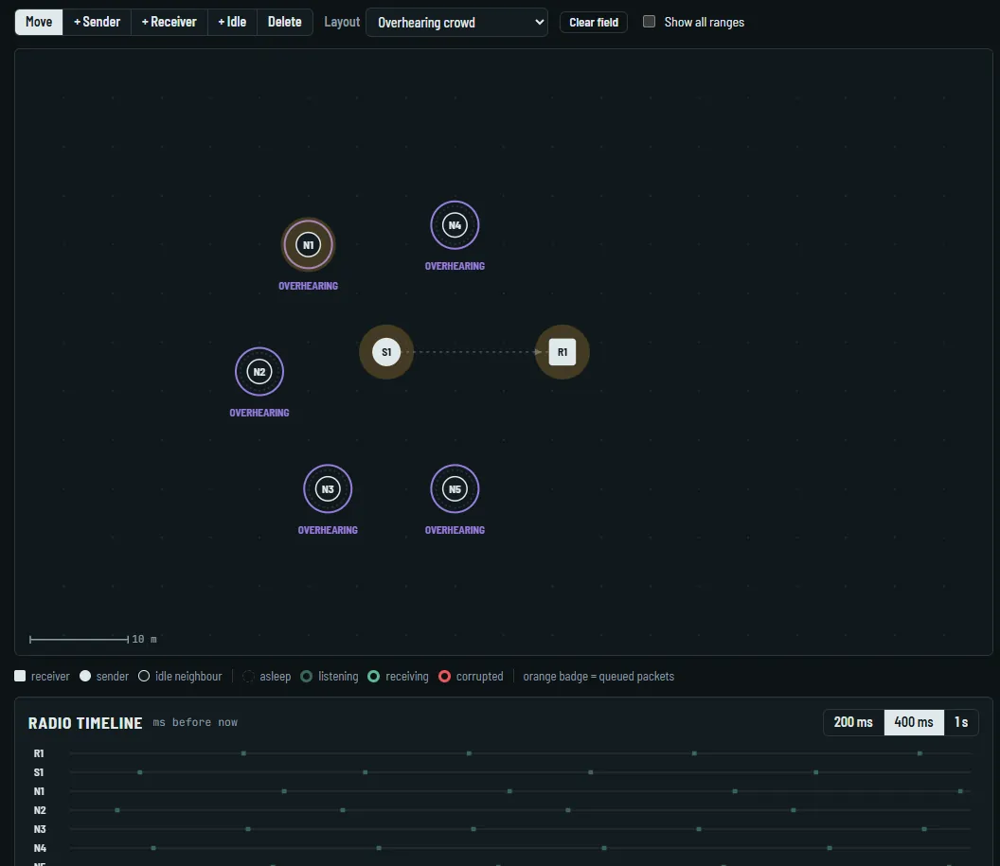
B-MAC: one long preamble (violet) covering the whole check interval, then DATA.
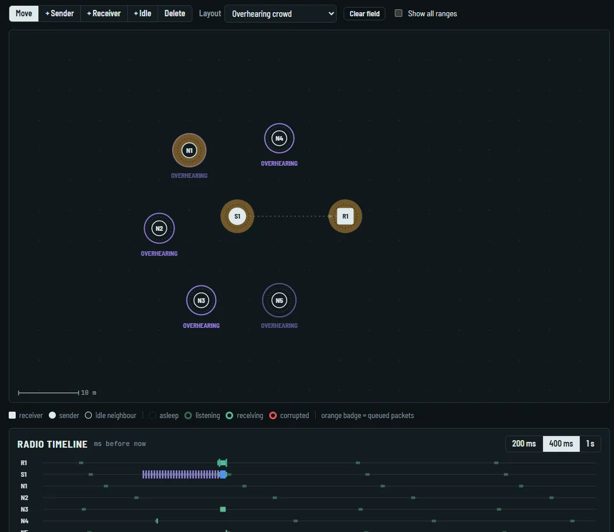
X-MAC: a train of short addressed strobes, an early ACK, then DATA.
Protocol
PDR
Radio duty cycle
Overhearing
Over-emitting
Timeline
B-MAC
96 % (25 / 26)
7.1 %
6882 ms / 125 frames
1303 ms
long preamble
X-MAC
100 % (26 / 26)
3.7 %
135 ms / 57 frames
655 ms
strobes + early ACK
Q4. B-MAC sends one long preamble that outlasts the check interval, then the data. X-MAC sends short strobes carrying the destination address, with gaps in between.
Q5. X-MAC: 135 ms of overhearing against about 6900 ms. A B-MAC neighbour that wakes during the preamble cannot tell who it is for and stays awake until the data; an X-MAC neighbour decodes one strobe, sees another address and goes back to sleep.
Q6. The receiver answers a strobe with an early ACK in the gap, so the sender stops strobing and sends the data at once. Over-emitting falls from about 1300 to 650 ms, the data leaves sooner, and the duty cycle drops from 7.1 to 3.7 %.
Experiment C — wake/check interval
Overhearing crowd, the two ends of the bench’s range (50 ms and 500 ms), B-MAC row of Compare all five.
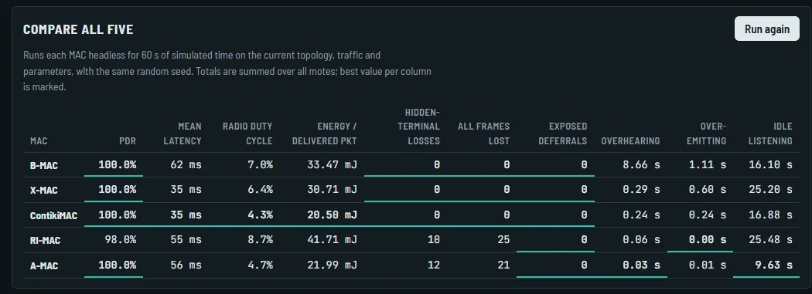
Wake interval 50 ms.
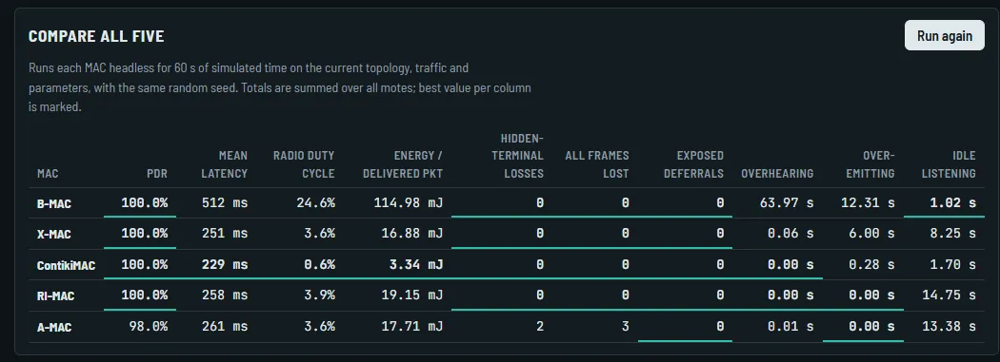
Wake interval 500 ms.
Wake interval
PDR
Mean latency
Duty cycle
Energy / delivered pkt
Over-emitting
Idle listening
50 ms
100 %
62 ms
7.0 %
33.47 mJ
1.11 s
16.10 s
500 ms
100 %
512 ms
24.6 %
114.98 mJ
12.31 s
1.02 s
Q7. Mean latency rose from 62 to 512 ms. A packet can only be delivered when the receiver wakes; with a 500 ms interval the sender waits much longer for that rendezvous and B-MAC’s preamble has to cover the whole interval.
Q8. The energy did not disappear, it moved. Receivers’ idle listening fell from 16.1 s to 1.0 s, but the preambles became ten times longer: over-emitting rose from 1.1 to 12.3 s and every neighbour that wakes during a preamble overhears it. Energy per delivered packet more than tripled. A long interval can still suit rare monitoring traffic; urgent alarms need a short one.
Experiment D — ContikiMAC phase lock (bonus)
Overhearing crowd, wake interval 100 ms, ContikiMAC row, phase lock off and on.
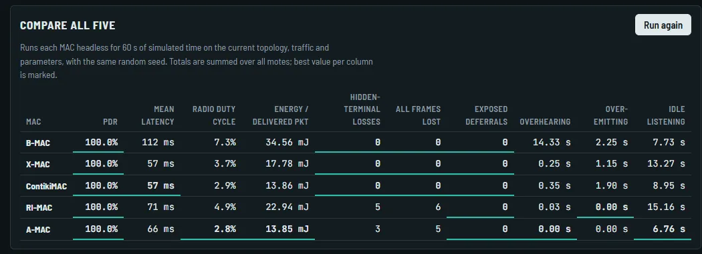
Phase lock off.
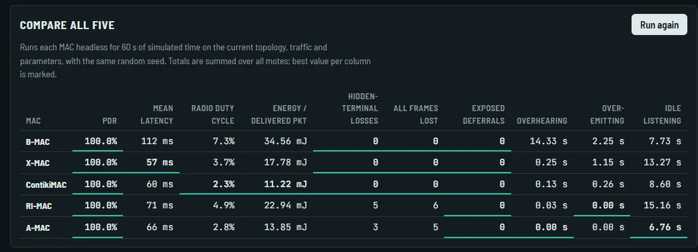
Phase lock on.
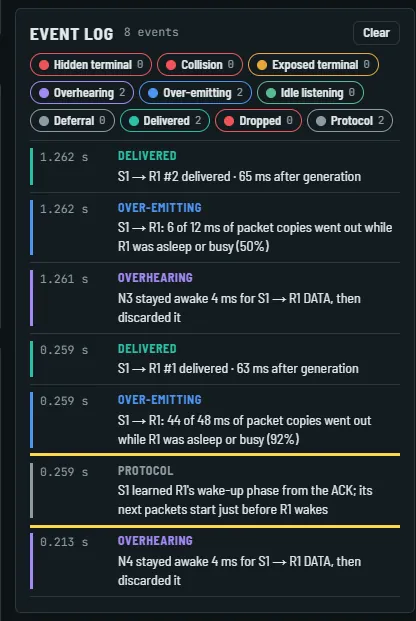
“S1 learned R1’s wake-up phase from the ACK; its next packets start just before R1 wakes.”
Phase lock
PDR
Mean latency
Duty cycle
Energy / delivered pkt
Over-emitting
Off
100 %
57 ms
2.9 %
13.86 mJ
1.90 s
On
100 %
60 ms
2.3 %
11.22 mJ
0.26 s
Q9. After the first delivery the sender learns from the ACK when the receiver wakes and starts its next packets just before that moment instead of repeating copies for a whole interval. Over-emitting falls from 1.90 to 0.26 s, duty cycle from 2.9 to 2.3 %, energy per packet from 13.9 to 11.2 mJ. Latency stays about the same (57 vs 60 ms) because the sender now waits for the predicted wake-up.
Q10. The bench has no clock drift, so a learned phase stays valid until an attempt fails. Real crystals drift: the sender must start earlier with a safety margin, and a wrong prediction falls back to a full interval of copies.
Experiment E — compare all five
Preset Funnel: 4 senders → 1 sink (the preset turns synchronised traffic on), default parameters, phase lock on.
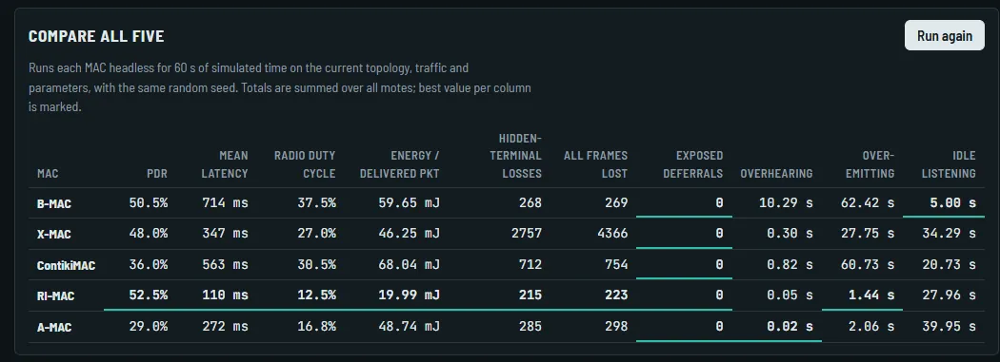
Funnel, 60 s per MAC, same seed.
MAC
PDR
Mean latency
Duty cycle
Energy / pkt
Hidden losses
B-MAC
50.5 %
714 ms
37.5 %
59.65 mJ
268
X-MAC
48.0 %
347 ms
27.0 %
46.25 mJ
2757
ContikiMAC
36.0 %
563 ms
30.5 %
68.04 mJ
712
RI-MAC
52.5 %
110 ms
12.5 %
19.99 mJ
215
A-MAC
29.0 %
272 ms
16.8 %
48.74 mJ
285
Four senders transmit to one sink at the same instant, so the sink is a contention point and senders on opposite sides cannot hear each other: every protocol loses packets here.
Q11. RI-MAC has the highest PDR, 52.5 %, and in this funnel it is also the lowest energy per delivered packet (19.99 mJ) and the lowest latency. It is receiver-initiated: the sink beacons when it wakes, so senders need no long preambles or strobe trains towards it.
Q12. A-MAC has a low duty cycle (16.8 %) but the lowest PDR (29 %); B-MAC delivers more (50.5 %) with radios on more than twice as long (37.5 %). X-MAC has half of B-MAC’s latency but ten times its hidden-terminal losses. The best protocol depends on the metric, the traffic and the topology; there is no universally best duty-cycled MAC.
Model limitations (Q13)
Unit-disk radio: a node hears a frame perfectly or not at all.
Carrier-sense range equals communication range.
No capture effect: any overlap destroys both frames.
1 ms time slots with simplified frame, ACK, strobe and beacon lengths.
No clock drift, so phase prediction is perfect until it fails.
Simplified CC2420 current model.
The bench explains mechanisms and trade-offs; its numbers are not real-world performance and do not rank the protocols for a real deployment.